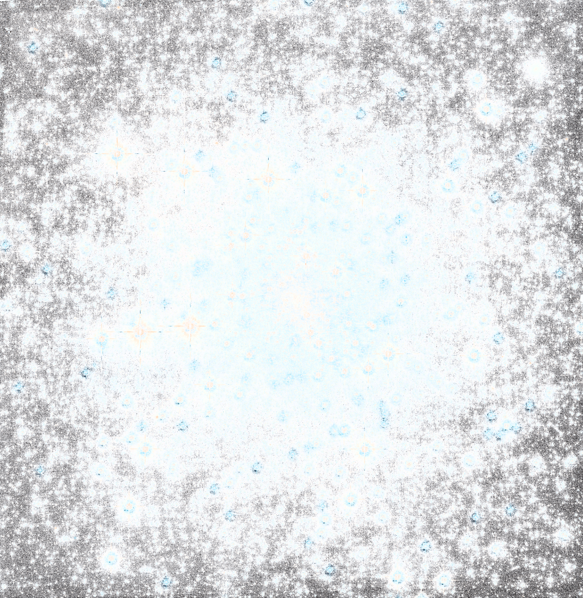

<!DOCTYPE html>
<html>
<head>
    <meta charset='utf-8'>
    <meta http-equiv='X-UA-Compatible' content='IE=edge'>
    <title>AR.js demo Stars</title>
    <script src="https://aframe.io/releases/1.0.4/aframe.min.js"></script>
    <script src="https://raw.githack.com/AR-js-org/AR.js/master/aframe/build/aframe-ar-nft.js"></script>


</head>

<body style='margin: 0; overflow: hidden;'>
<a-scene
        id="scene"
        vr-mode-ui="enabled: false"
        embedded
        arjs='sourceType: webcam; debugUIEnabled: false;'>
    <a-assets>
        <a-asset-item autoload id="object" src="../3d/nebula1.glb"></a-asset-item>
<!--        <a-asset-item autoload id="testModel" src="planets/Test.glb"></a-asset-item>-->
<!--        -->
<!--        -->
<!--        -->

    </a-assets>


<!--    <a-sphere position="0 5 -80" material="color:red; opacity: 0.5"  radius="1" ></a-sphere>-->
    <a-text id="timeLabel" position="0 2.5 -10" value="Ees keskel" align="center"></a-text>
   <a-entity id="galaxy" gltf-model="#object"
             rotation="0 0 0"
             position="0 0 0"
             animation="property: rotation; to: 0 360 0; loop: true; dur: 60000; easing: linear"
             scale="60 60 60">
   </a-entity>

<!--    <a-image src="#transparent1"-->
<!--             rotation="45 0 0"-->
<!--             position="-20 5 -50"-->
<!--             scale="50 50 50"-->
<!--             animation__move = "property:position; dur: 20000; to: 0 100 -999"-->
<!--             animation__rotation = "property:rotation; dur: 30000; to: 45 0 360; loop:true; easing: linear"-->
<!--    ></a-image>-->


    <!--<a-camera gps-camera="simulateLatitude: 58.3840; simulateLongitude: 26.7218;" rotation-reader>-->
    <a-camera>
    </a-camera>
</a-scene>
</body>
</html>
